Deep Photo Scan:
Semi-Supervised Learning for dealing with the real-world degradation in Smartphone Photo Scanning
| Man M. Ho | Jinjia Zhou |
|
Hosei University, Tokyo, Japan |
| [Paper] | [SupDoc] | [Demo] | [Code] |
In Proceedings of the Winter Conference on Applications of Computer Vision (WACV), 2022
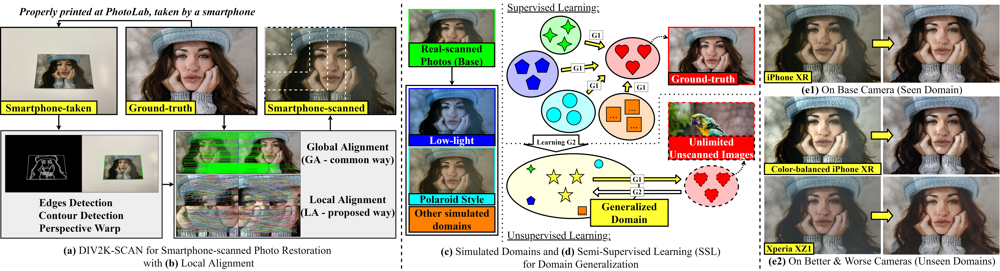
We present DIV2K-SCAN dataset for smartphone-scanned photo restoration (a) with Local Alignment (b), simulate varied domains to gain generalization in scanned image properties using low-level image transformation (c), and design a Semi-Supervised Learning system to train our network on also unscanned images, diversifying training image content (d). As a result, this work obtains state-of-the-art performance on smartphone-scanned photos in seen and unseen domains (e1-e2).
Life Blossom by Keys of Moon | https://soundcloud.com/keysofmoon
Music promoted by https://www.free-stock-music.com
Attribution 4.0 International (CC BY 4.0)
https://creativecommons.org/licenses/by/4.0/
Abstract
Physical photographs now can be conveniently scanned by smartphones and stored forever as a digital version, yet the scanned photos are not restored well. One solution is to train a supervised deep neural network on many digital photos and the corresponding scanned photos. However, it requires a high labor cost, leading to limited training data. Previous works create training pairs by simulating degradation using image processing techniques. Their synthetic images are formed with perfectly scanned photos in latent space. Even so, the real-world degradation in smartphone photo scanning remains unsolved since it is more complicated due to lens defocus, lighting conditions, losing details via printing. Besides, locally structural misalignment still occurs in data due to distorted shapes captured in a 3-D world, reducing restoration performance and the reliability of the quantitative evaluation. To solve these problems, we propose a semi-supervised Deep Photo Scan (DPScan). First, we present a way of producing real-world degradation and provide the DIV2K-SCAN dataset for smartphone-scanned photo restoration. Also, Local Alignment is proposed to reduce the minor misalignment remaining in data. Second, we simulate many different variants of the real-world degradation using low-level image transformation to gain a generalization in smartphone-scanned image properties, then train a degradation network to generalize all styles of degradation and provide pseudo-scanned photos for unscanned images as if they were scanned by a smartphone. Finally, we propose a Semi-supervised Learning that allows our restoration network to be trained on both scanned and unscanned images, diversifying training image content. As a result, the proposed DPScan quantitatively and qualitatively outperforms its baseline architecture, state-of-the-art academic research, and industrial products in smartphone photo scanning.
Data Preparation
We produce real-world degradation by printing the ground-truth images, taking the printed photo using a smartphone, edges detection, contour detection, and perspective warp (green). Afterward, we apply Global Alignment (GA - common way) to align the smartphone-scanned photo to its ground-truth (blue).
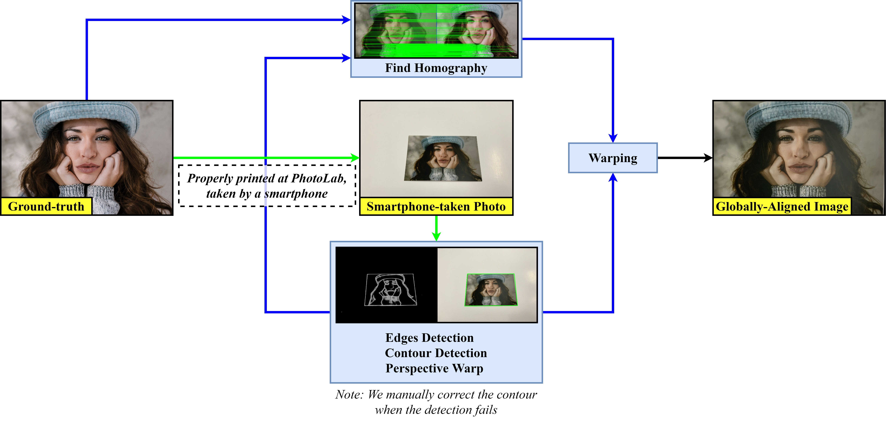
Although the smartphone-scanned image pairs are aligned globally, a minor misalignment still occurs, lowering restoration performance and making a quantitative comparison using similarity metrics less reliable. To address this problem, we propose a Local Alignment (LA) to perfectly align a smartphone-scanned photo to its ground-truth. Concretely, we step-by-step apply a center crop to R_1% of the current size to remove the black borders, resize to MxN using bicubic interpolation, extract patches from color-balanced photos to find homography matrices (blue) and from original photos for warping using a sliding window with a size of W_1 and a stride of S% of W_1, warp the scanned patches, center crop to R_2% of the size again, and finally obtain the locally-aligned patches with a size of W_2=R_2*W_1. O=1-S/R_2 denotes the percentage of how much two consecutive final patches overlap. Extracting and warping patches are powered by Kornia.
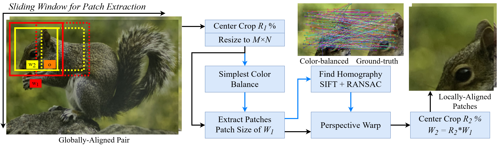
Learning Approach
Our learning approach can be described step-by-step as follows:
-
We train a restoration network G1 with supervised learning on 1-domain DIV2K-SCAN (iPhone XR).
The trained model at this stage is named 1-domain DPScan (1D-DPScan).
-
Inspired by Deep Preset, we simulate many different domains from the real-world degradation as if
the photos were also captured in/by other shooting environments and devices,
then train G1 on them to generalize smartphone-scanned image properties.
The trained model at this stage is named Generalized DPScan (G-DPScan).
-
We train a degradation network G2 to generalize all types of degradation
and provide pseudo-scanned images for unscanned photos as if a smartphone scanned them.
Consequently, G1 can be trained on scanned and unscanned photos, representing a Semi-Supervised Learning (SSL)
for diversifying training image content.
Note: SSL can be applied to improve the restoration performance of the pre-trained model at any stage.

Q & A
Q: Is it possible to simulate smartphone-scanned photos in other domains using low-level image transformation?A: Yes, it is possible.
To prove the feasibility of this scheme, we manually adjust the photo taken by iPhone XR as if this photo was also scanned in/by other shooting environments (at dusk with lack of light) and devices (Polaroid and Sony Xperia XZ1) using low-level image transformation. As a result, the simulated photos are qualitatively similar to the real-world domains, as shown below. Besides, an experimental result shows that DPScan has a better generalization performance being trained on also simulated domains.
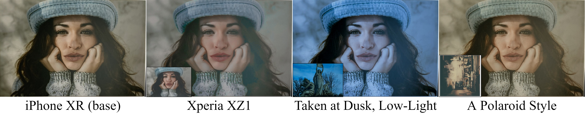
Q: SSL seems to map high-quality images to a seen domain. Is training DPScan on pseudo-scanned images can lead to better performance?
A: Yes, it can lead to better performance.
Since producing the real-world degradation costs a huge resource (E.g., printing images, cutting photos, manually checking and correcting detected contours, etc.), the proposed SSL can degrade a high-quality image as if it were also scanned by a smartphone so that DPScan can be trained on also unscanned photos, diversifying training image content. In the case of DPScan being trained on multiple domains, the degradation network will generalize all styles of degradation. An experimental result shows that SSL can provide a significant improvement.
Q: How many simulated domains are enough?
A: The largest number of simulated domains (K) we have tried is 100.
After training DPScan on iPhone XR (1D-DPScan), we conduct an ablation study on K where K in {25, 50, 75, 100} in fine-tuning 1D-DPScan. Test sets are prepared to have 1 seen domain and 2 unseen domains so that the improvement of average performance over three domains can represent better generalization performance. As a result, G-DPScan with K=75 obtains the highest PSNR in the first 100,000 iters (~100 hours of training). However, in the next 100,00 iters, the performance of G-DPScan with K=75 is saturated; meanwhile, G-DPScan with K=100 can still be improved, even though it takes a longer training time, as shown below. Continuing training G-DPScan with K=100 can lead to better performance. In conclusion, fine-tuning 1D-DPScan on simulated domains leads to better generalization in smartphone-scanned image properties, but we are not sure about the largest number of simulated domains yet.
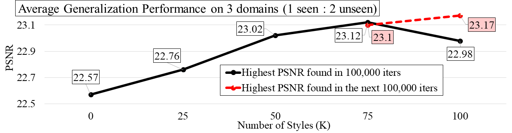
Feel free to send your question to manminhho.cs (at) gmail (dot) com or leave your message at https://github.com/minhmanho/dpscan/issues
DIV2K-SCAN dataset
| Train Set | Test Sets (Ground-truth: [GA] [LA]) | ||
|
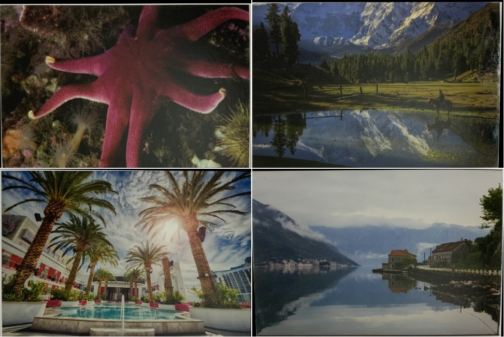
iPhone XR: [GA] [LA] |
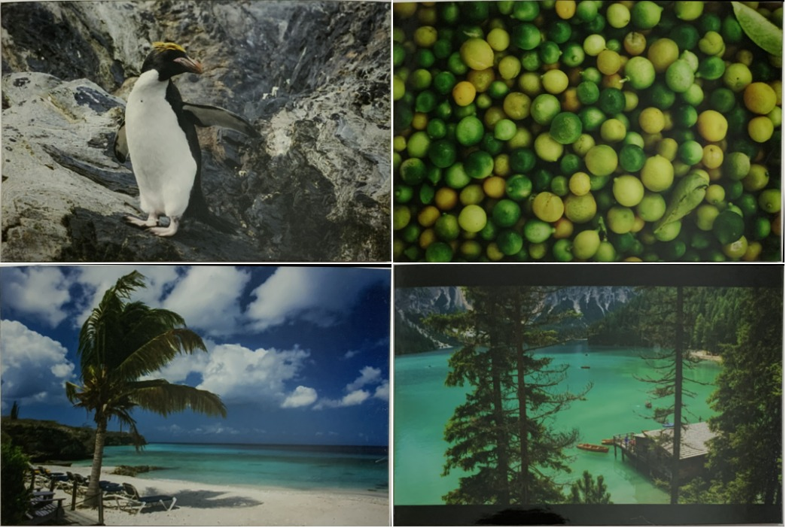
iPhone XR: [GA] [LA] |
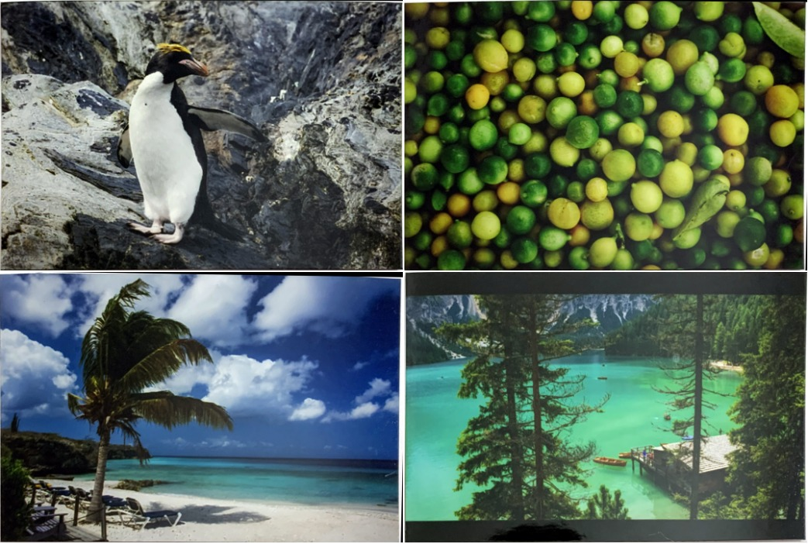
iPhone XR + SCB: [GA] [LA] |
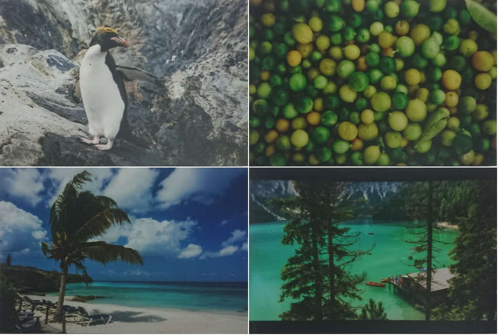
Xperia XZ1: [GA] [LA] |
Ablation Study and A Quantitative Comparison
We provide a full version of quantitative comparison using PSNR (higher is better) on multiple-domain DIV2K-SCAN (iPhone XR is a seen domain, while iPhone XR + SCB and Xperia XZ1 are unseen domains) with an image size from 176x176 to 1072x720.
Ablation models, 1D-DPScan, and the previous works Pix2Pix and CycleGAN are trained on and to solve 1-domain DIV2K-SCAN (iPhone XR); meanwhile, other methods such as Old Photo Restoration (OPR), industrial products, and our G-DPScan are to solve multiple domains.
This experiment shows that:
- The image quality is gradually reduced in ascending order of image size, proving that the larger the image size, the more serious misalignment.
- Each presented technique brings a significant improvement, and the final version of DPScan outperforms all ablation models (middle-top).
- Our 1D-DPScan (trained on iPhone XR only) and G-DPScan (trained to solve multiple domains) outperform the research works and industrial products Google Photo Scan and Genius Scan comprehensively.
- RECA: the RECA-customized network
- LA: model trained on Locally-Aligned data
- SL: model trained with Supervised Learning
- SSL: model trained with Semi-Supervised Learning
- 1D-DPScan: DPScan+RECA+LA+SSL trained on 1-domain DIV2K-SCAN (iPhone XR)
- G-DPScan: DPScan+RECA+LA+SSL trained on multiple-domain DIV2K-SCAN
Please check our supplemental document for a comparison using LPIPS and MS-SSIM.
A Qualitative Comparison between Ablation Models
A Qualitative Comparison on iPhone XR
(Seen Domain - In-Distribution)
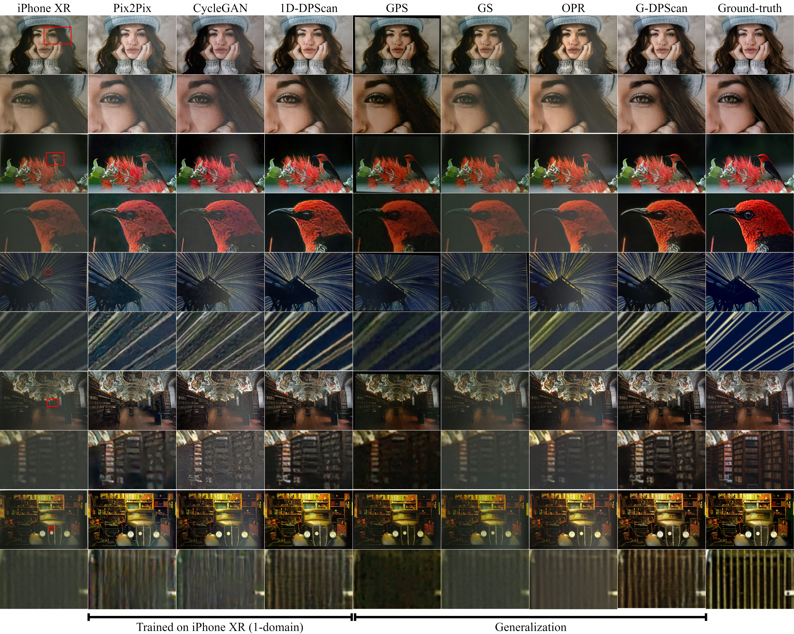
A Qualitative Comparison on Color-Balanced iPhone XR and Xperia XZ1
(Unseen Domains - Out-of-Distribution)
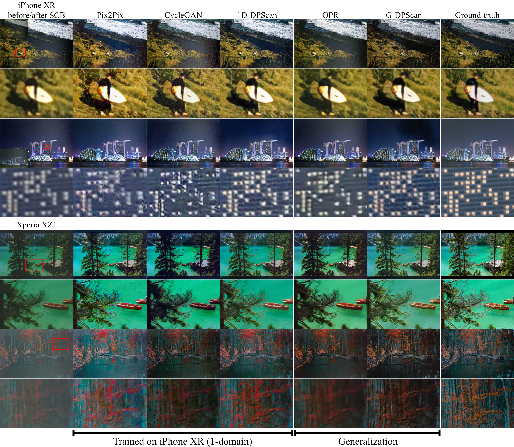
If you find our work useful, please consider citing
@misc{ho2021deep,
title={Deep Photo Scan: Semi-supervised learning for dealing with the real-world degradation in smartphone photo scanning},
author={Man M. Ho and Jinjia Zhou},
year={2021},
eprint={2102.06120},
archivePrefix={arXiv},
primaryClass={cs.CV}
}
License
This work, including the trained models, code, and dataset, is for non-commercial uses and research purposes only.
References
[Simplest Color Balance - SCB] Limare, Nicolas, Jose-Luis Lisani, Jean-Michel Morel, Ana Belén Petro, and Catalina Sbert. "Simplest color balance." Image Processing On Line 1 (2011): 297-315.
[Pix2Pix] Isola, Phillip, Jun-Yan Zhu, Tinghui Zhou, and Alexei A. Efros. "Image-to-image translation with conditional adversarial networks." In Proceedings of the IEEE conference on computer vision and pattern recognition, pp. 1125-1134. 2017.
[CycleGAN] Zhu, Jun-Yan, Taesung Park, Phillip Isola, and Alexei A. Efros. "Unpaired image-to-image translation using cycle-consistent adversarial networks." In Proceedings of the IEEE international conference on computer vision, pp. 2223-2232. 2017.
[OPR] Wan, Ziyu, Bo Zhang, Dongdong Chen, Pan Zhang, Dong Chen, Jing Liao, and Fang Wen. "Old photo restoration via deep latent space translation." arXiv preprint arXiv:2009.07047 (2020).